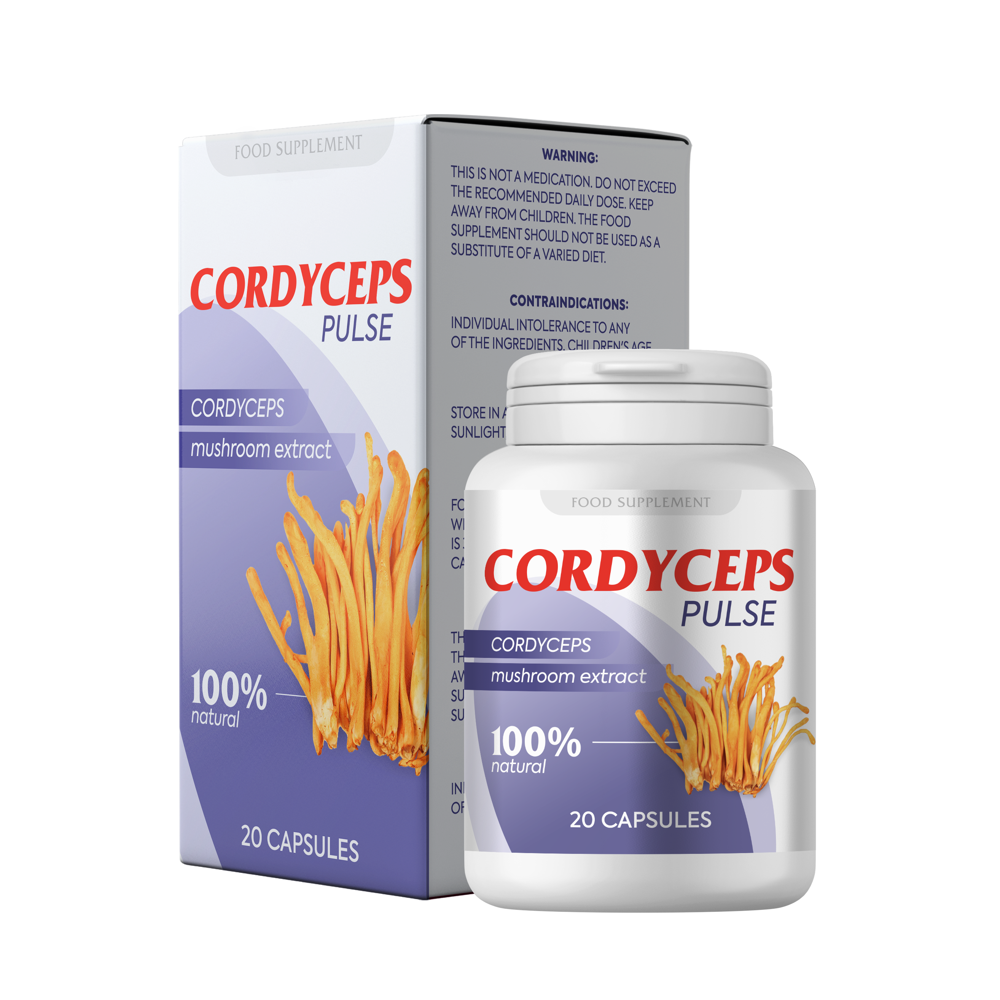
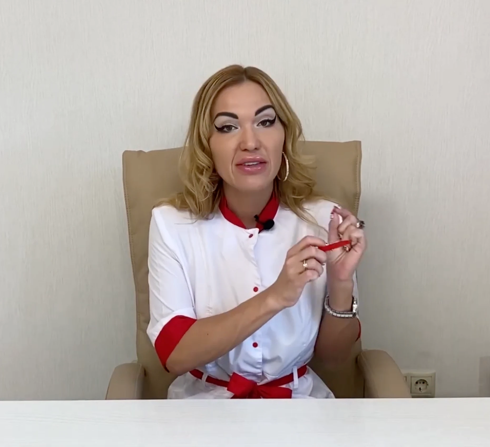
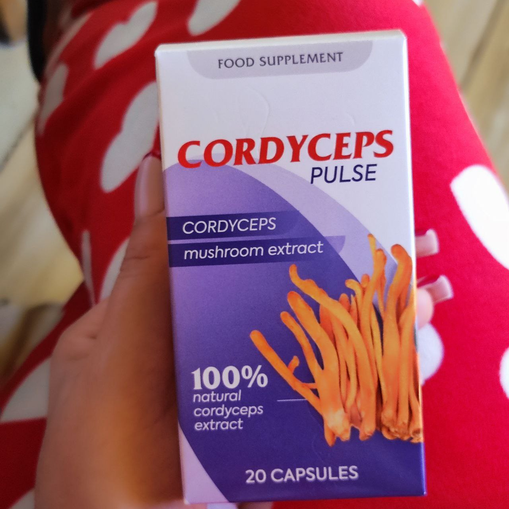
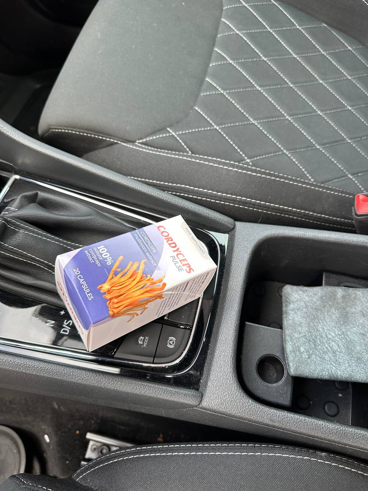
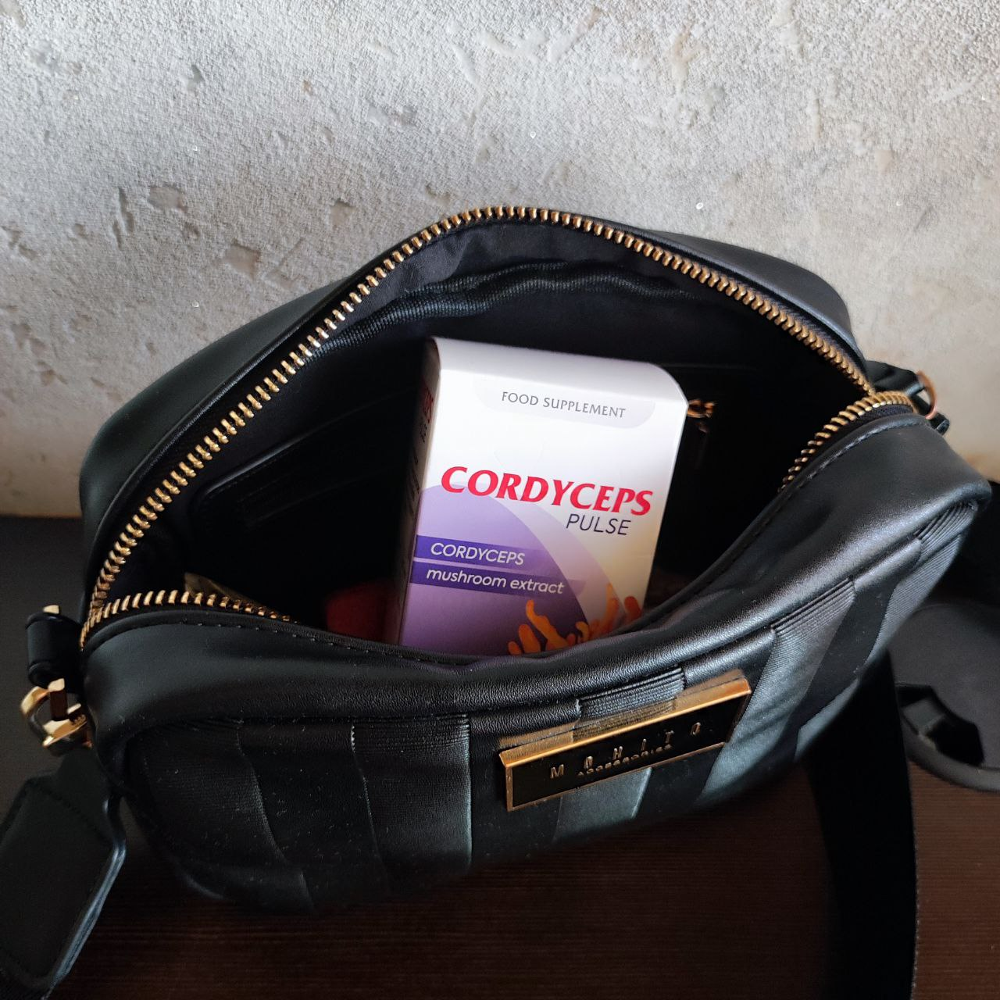

Proč přibíráte na váze, i když téměř nejíte? Česká lékařka odhalila skutečnou příčinu — a jednoduchý domácí rituál, díky kterému tisíce žen zhubly až 20 kg za 17 dní
„Nemohla jsem se podívat do zrcadla. Styděla jsem se svléknout i před sebou samou." — Přiznává 54letá Jana z Prahy, která zhubla 24 kg bez diet a cvičení.

Nedávná studie provedená ve spolupráci s předními českými odborníky odhalila metodu, která je schopná rozpouštět tukové zásoby a pomoci ženám zbavit se až 4 kg tuku týdně — bez diet, bez cvičení, bez hladovění.
Tato přírodní látka pomáhá rozpustit až 20 kg čistého tuku za měsíc a odstranit ho z těla zcela přirozenou cestou, aniž by způsobila jakoukoliv újmu organismu. Pozor: tato metoda nemá absolutně nic společného s projímadly nebo podobnými přípravky!
Zcela přírodní a bez vedlejších účinků — tento přípravek, známý jako „ničitel tuku", je ideálním řešením pro všechny, kteří chtějí rychle zhubnout a už je unavují nekonečné diety.
Pokud jste starší 35 let a nemůžete zhubnout, ať děláte cokoliv — čtěte tento článek až do konce. Dozvíte se, proč vaše tělo odmítá spalovat tuk, co skutečně stojí za vaší nadváhou a jak to jednou provždy změnit. Bez hladovění, bez posilovny, bez chirurgických zákroků.
„Měla jsem 54 let a bála jsem se jít s vnoučaty na pláž"
Jmenuji se Jana Nováková. Je mi 54 let a jsem z Prahy. Čtyři roky přebytečných kilogramů ze mě udělaly poustevnici. Tuk se hromadil na břiše, stehnech, pažích, pod bradou. Jedla jsem velmi málo, ale váha stále rostla.
Můj intimní život úplně vyhasl. Styděla jsem se. Už jsem se necítila jako žena. Ztratila jsem sebevědomí, ztratila jsem touhu, ztratila jsem sama sebe.
Každé ráno jsem vstávala a první věc, na kterou jsem myslela, bylo mé tělo. Ta tíha. Ten pocit, že nemáte nad ničím kontrolu. Že vaše vlastní tělo je váš nepřítel. Znáte to? Ten pocit, kdy se koukáte do zrcadla a nepoznáváte se?
Vyzkoušela jsem všechno — čaje na hubnutí, prášky, fitness předplatné, keto dietu, intermittent fasting. Prášky mi způsobovaly bolesti žaludku a průjmy. V posilovně jsem se trápila měsíce a kilogramy se buď nehnuly, nebo se vrátily zpět. Z keto diety se mi točila hlava a taky nefungovala.
Lékaři jen pokrčili rameny: „To je věk, metabolismus se zpomaluje, zvykněte si."
Jeden mi předepsal diuretika. Jiný doporučil operaci — bariatrický zákrok za 200 000 Kč. Třetí řekl, abych jedla méně. Jenže já jedla 1 200 kalorií denně a stále přibírala!
Dospěla jsem k takovému zoufalství, že jsem v noci plakala. Téměř jsem nevycházela z domu. Pomalu jsem přestávala žít. Dcera mi řekla: „Mami, vypadáš o deset let starší, než jsi." To byl ten moment, kdy jsem si řekla — buď se to změní, nebo…
Ale pak se všechno změnilo
Na trhu v Praze jsem potkala ženu, která kdysi trpěla úplně stejným problémem. Všimla si, jak jsem nervózní — stála jsem u stánku s oblečením a prohlížela si sukně, které mi nemohly padnout. Zeptala se, co se děje. Neudržela jsem se a vyprávěla jí všechno.
Usmála se a řekla, že ona na tom byla ještě hůř — vážila 112 kg a lékaři ji varovali, že jí hrozí infarkt. Dokud neobjevila video doktorky Ludmily Emilové.

Dr. Ludmila Emilová, 74 let — přední česká specialistka na hormonální metabolismus a endokrinologii. Více než 40 let pomáhá ženám, aby byly štíhlejší, zdravější a cítily se opět skutečně živé. Autorka desítek odborných publikací o vlivu hormonů na tělesnou hmotnost.
Další ráno jsem se probudila a nemohla uvěřit svým pocitům. Břicho bylo měkčí. Otoky splaskly. Za tři dny bylo oblečení volnější. Nezměnila jsem zvlášť jídelníček. Nechodila jsem do posilovny. Prostě jsem následovala to, co doktorka Emilová doporučila.
Druhý den zmizela ta neustálá chuť k jídlu, která mě trápila roky. Přestala jsem v noci chodit k ledničce. Třetí den jsem si oblékla džíny, které jsem nenosila dva roky. Pátý den mi manžel řekl: „Jano, co se stalo? Vypadáš jinak." A já se poprvé za čtyři roky usmála.
Proč přibíráte — i když nejíte?
Spolu s týmem předních vědců doktorka Emilová odhalila jednoduchou pravdu, které zpočátku nikdo nevěřil: příčina vaší nadváhy není na vašem talíři.
— Dr. Ludmila Emilová, výzkumný tým Metabolického centra Praha
Viníkem jsou hormony, které blokují váš metabolismus po 35. roce. Konkrétně hormon, kterému říkáme „hormon smrti" — kortizol.
Co je kortizol? Je to stresový hormon, který produkují nadledviny. V malých dávkách je nezbytný — pomáhá nám reagovat na nebezpečí, reguluje krevní tlak, pomáhá s imunitou. Ale po 35–40 letech ho tělo začne produkovat stále více. A právě v tom je problém.
Představte si to jako kapku jedu, kterou dostáváte každý den. Jedna kapka nic neudělá. Ale za rok, za dva, za pět let — ten jed se hromadí. A vaše tělo začíná kolabovat.
Co přesně kortizol dělá s vaším tělem?
- Ničí část DNA odpovědnou za spalování tuků — vaše buňky doslova ztrácejí schopnost přeměňovat tuk na energii
- Zpomaluje metabolismus — i když jíte málo, tělo funguje v „úsporném režimu" a ukládá každou kalorii
- Nutí tělo ukládat tuk — i z jogurtu, i když spíte, i z pouhého sklenice vody s citrónem
- Zvyšuje chuť k jídlu — neustálý hlad, zvláště na sladké a tučné, to není vaše vina — to je kortizol
- Způsobuje záněty — otoky, bolesti kloubů, únava, špatný spánek — to vše je důsledek
- Ničí kolagen — pokožka ztrácí pružnost, objevují se vrásky, celulitida, povislá kůže
Proto přibíráte rychleji než dřív. Proto břicho nezmizí. Proto se objevují otoky, slabost, stárnutí. A proto žádná dieta, trénink ani injekce nefunguje — bojujete s následkem, ne s příčinou.
Doktorka Emilová a její tým strávili 15 let výzkumem, aby našli způsob, jak normalizovat hladinu kortizolu bez léků, bez hormonální terapie, bez vedlejších účinků. A našli ho — ve vzácné přírodní složce, kterou lidstvo zná tisíce let, ale jejíž skutečný potenciál pro hubnutí byl objeven teprve nedávno.
Cordyceps sinensis — tajná zbraň proti nadváze
Vědci identifikovali přírodní složku, která dokáže v těle téměř nemožné — stabilizuje hormony, normalizuje kortizol a aktivuje přirozené spalování tuků. Je to Cordyceps sinensis — vzácná houba, kterou tradiční čínská medicína používá již tisíce let.
V Tibetu ji nazývají „zlatým motýlem" nebo „housenkovcem". Po staletí byla tak vzácná a drahá, že ji mohli užívat pouze čínští císaři a vysocí úředníci. Teprve moderní biotechnologie umožnila její pěstování a zpřístupnění běžným lidem.
Jak Cordyceps sinensis funguje?
- Normalizuje hladinu kortizolu — hlavní příčiny nekontrolovaného přibírání na váze. Tělo přestává být ve stavu chronického stresu a konečně „uvolňuje" tukové zásoby
- Je vysoce účinný při prevenci obezity — jako součást komplexní terapie pro snižování tělesné hmotnosti působí na více úrovních současně
- Ozdravuje organismus a podílí se na tvorbě zdravé střevní mikrobioty — 80 % imunitního systému sídlí ve střevech, a právě jejich stav rozhoduje o tom, zda přibíráte nebo hubnete
- Zlepšuje metabolické ukazatele — tělo přestává ukládat tuk a začíná ho spalovat jako palivo
- Stimuluje tvorbu ATP — organické sloučeniny, díky které se zvyšuje fyzická aktivita a vytrvalost. Místo únavy a slabosti budete mít energii na celý den
- Reguluje hladinu cukru v krvi — zmizí neustálé chutě na sladké, přestanete „zametat ledničku" v noci
„Cordyceps sinensis je jedinečný tím, že nepůsobí jen na symptomy — útočí přímo na hormonální příčinu nadváhy. Tělo se přepne z režimu ukládání do režimu spalování. A to bez jakýchkoli vedlejších účinků. Za 40 let praxe jsem neviděla nic účinnějšího."
— Dr. Ludmila Emilová
Ale samotný Cordyceps sinensis nestačí. Důležitá je správná forma extrakce, koncentrace a dávkování. Běžné doplňky stravy s cordycepsem, které najdete v lékárnách, obsahují příliš nízkou koncentraci účinných látek. Aby cordyceps skutečně fungoval na hubnutí, musí být zpracován speciální technologií.
Cordyceps Pulse — přípravek, který míří na skutečnou příčinu
Spolu s předními odborníky vyvinula doktorka Emilová přípravek na bázi 100% přírodního extraktu Cordyceps sinensis v maximální koncentraci — aby vám dal lehké, krásné tělo navždy.
Cordyceps Pulse je přírodní doplněk stravy ve formě kapslí (20 ks v balení), který působí na skutečnou hormonální příčinu nadváhy a vrací vám pevnou, elastickou pokožku a sebevědomí.
Forma: Kartónová krabička, uvnitř bílá plastová lahvička s 20 kapslemi.
Způsob užívání: Dospělí užívají 1 kapsli 2× denně při jídle. Doporučená délka kurzu: 3 měsíce. Při potřebě lze kurz opakovat.
- Bez injekcí, bez diet, bez cvičení
- I když je vám 40, 60 nebo 80
- I když máte cukrovku, vysoký tlak nebo chronickou únavu
- I když jste vyzkoušely úplně všechno — a nic nezabralo
- 100% přírodní složení bez chemických přísad
Kurz aplikace — 3 měsíce, které změní váš život
Cordyceps Pulse je navržen pro kurzové užívání. Doporučená délka kurzu je 3 měsíce. Při potřebě lze kurz opakovat. Tady je to nejzajímavější — účinek se postupně zesiluje:
1.–2. týden: Přizpůsobení
Cordyceps sinensis začíná normalizovat hladinu kortizolu. Mizí neustálá chuť k jídlu, ustupují otoky a zadržování vody. Cítíte se lehčí, máte více energie. Přestáváte se v noci budit. Mnoho žen hlásí, že jim poprvé za roky nerostou čísla na váze — a to samo o sobě je průlom.
3.–4. týden: Metabolismus se rozjíždí
Tuk se začíná rozpouštět — nejprve viscerální (vnitřní) tuk, který obaluje orgány a je nejnebezpečnější. Právě tento tuk způsobuje cukrovku 2. typu, vysoký tlak a srdeční problémy. Zlepšuje se trávení, střevní mikrobiota se obnovuje. Oblečení začíná být volnější. Průměrný úbytek: 4–7 kg.
5.–8. týden: Hluboké čištění organismu
Tělo se zbavuje nahromaděných toxinů a odpadních látek. Otoky úplně zmizí, klouby přestávají bolet, pokožka se zpevňuje a začíná zářit. Přibývá fyzická vytrvalost díky zvýšené produkci ATP. Ženy hlásí, že mají energii, kterou neměly ani ve 30 letech. Průměrný úbytek: dalších 6–10 kg.
9.–12. týden: Stabilizace výsledků
Tělo přešlo do režimu spalování natrvalo. Normalizuje se krevní tlak, cholesterol, hladina cukru. Cítíte se jako jiný člověk — lehčí, zdravější, plní energie. Pokožka je pevná, celulitida ustupuje. Výsledek hubnutí je trvalý — na rozdíl od diet se váha nevrací, protože jste odstranili příčinu, ne jen následek.
Výsledky Jany po 17 dnech
Ale vraťme se k Janě — té samé 54leté ženě z Prahy, jejíž příběh jste četli na začátku:
Po dvou měsících jsem zhubla 24 kg. Začala jsem nosit šaty, které jsem neměla na sobě 5 let. Manžel se na mě zase díval jako dřív. Vnoučata řekla: ‚Babičko, jsi krásná!' A já jsem poprvé za roky plakala — ale tentokrát štěstím."
Jana není jediná. Doktorka Emilová shromáždila tisíce podobných příběhů. Zde jsou některé z nich:
Co říkají další ženy, které vyzkoušely Cordyceps
Výsledky našich zákaznic — před a po
Podívejte se, jak jednoduché to je!
- Bez diet a cvičení. Nemusíte měsíce jíst jablka a saláty. Nemusíte se trápit v posilovně. Nemusíte ani vycházet z domu. Můžete jíst, co chcete — Cordyceps pracuje bez ohledu na vaši stravu.
- Z pohodlí domova. Stačí užívat 1 kapsli Cordyceps 2× denně při jídle — to je vše. Žijete normálně, zatímco se vaše tělo proměňuje ve spalovací stroj. 10 sekund ráno, 10 sekund večer. To je celý „cvičební plán".
- Bez velkých výdajů. Žádné drahé kliniky, injekce nebo operace. Žádné předplatné v posilovně za 800 Kč měsíčně. Žádné drahé dietní programy za tisíce korun.
- Bez vedlejších účinků. 100% přírodní složení. Žádné chemikálie, žádné hormony, žádná projímadla. Vaše tělo dostává to, co potřebuje — nic víc, nic méně.
Pro koho je Cordyceps určen?
1. Vážíte přes 90 kg?
Za první měsíc zhubněte 8–12 kg, za 3 měsíce kurzu i 20–30 kg! Již v prvních 4 týdnech začnete ztrácet viditelné množství tuku. A co je nejdůležitější — váha se nevrátí, protože Cordyceps řeší příčinu, ne symptom.
2. Máte obavy o své zdraví?
Vysoký cholesterol, vysoký krevní tlak, bolesti kloubů, nedostatek energie, špatný spánek? Po pouhých 2 týdnech budou vaše výsledky vypadat výborně. Za 4 týdny bolesti zmizí. Nebudete už žít se strachem o své zdraví. Cordyceps neozdravuje jen postavu — ozdravuje celý organismus.
3. Milujete dobré jídlo a nedokážete držet dietu?
Nemusíte. Přísné diety se ani nedoporučují. Můžete jíst, co chcete — Cordyceps funguje nezávisle na vaší stravě. A co víc — po prvním týdnu zjistíte, že přirozeně jíte méně. Ne proto, že se nutíte — ale proto, že tělo přestalo posílat falešné signály hladu.
4. Nesnášíte sport?
Nenuťte se cvičit. Vaše tělo je už pod tlakem kvůli nadváze — násilné cvičení může nadledvinám způsobit ještě více stresu a produkce kortizolu se zvýší. Doporučuje se začít s lehkým pohybem až za 2–4 týdny, když budete lehčí. A díky zvýšené produkci ATP budete mít na pohyb i chuť!
5. Komplexují vás kvůli váze?
Stále hůře hledáte oblečení, které vám padne? Necítíte se přitažlivá? Vyhýbáte se zrcadlům, fotografiím, plavkám? Dejte si méně než měsíc. Konečně si budete moci oblékat krásné šaty o několik velikostí menší. Konečně budete chtít fotit selfie. Konečně se budete cítit jako žena.
6. Máte strach, že to nebude fungovat?
Rozumíme. Po tolika zklamáních je přirozené být skeptická. Ale Cordyceps Pulse není „další zázračný přípravek" — je to vědecky podložené řešení, které cílí na skutečnou příčinu nadváhy. Tisíce žen v Česku ho už vyzkoušely s úspěchem.
Co získáte s objednávkou:
Život je příliš krásný na to, abyste ho zmenšovaly nadbytečnými kily. Nemyslíte? Nemusíte trpět. Nemusíte se stydět. Nemusíte se vyhýbat zrcadlům. Neriskujete vůbec nic. Jediné, co můžete ztratit, je 20, 30 nebo i 50 kg přebytečné váhy.
Vyplňte krátký formulář níže a získejte slevu 50 % na Cordyceps Pulse. Nabídka je omezená!
Není nutné platit předem. Náš kurýr vám doručí zásilku, abyste si byli jisti, že dostáváte originální produkt. Platíte až při převzetí.
Objednat Cordyceps se slevou 50 %
Komentáře (14):


